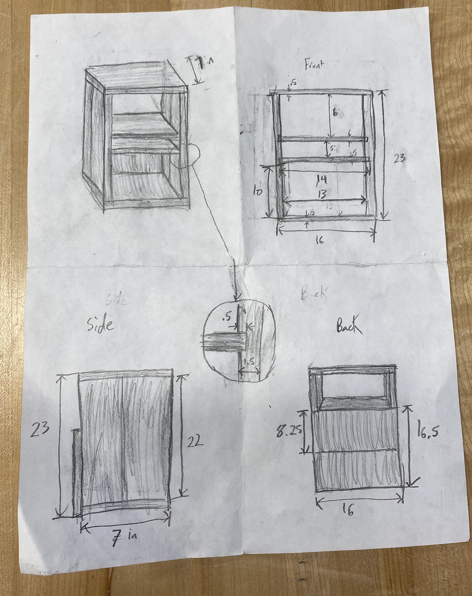

My housemate said that he wanted a small shelf to store some of his craft supplies so I decided to build him one. This was a bit of a challenge because I was fairly new to wood working but I was excited to take it on. I went through the wood scrap bin in the maker space and looking over what I found I sketched out a rough design, which you can see below.
All of the measurements are in inches. I decided that I wanted the shelves to be slotted into the the sides of the shelf to give myself an extra challenge. The drawing itself is not to scale.
I used the miter saw and table saw in NOLOP (my school's maker space) to cut my wood and sanded down all my sharp corners/edges. The table saw was particularly helpful for cutting out the notches in the side pieces where the shelves fit in.
After everything was cut and sanded I put all the pieces together. Below are photos of my finished shelf. I found some extra wood stain in NOLOP along with some polyurethane wood finish that I used for the final product.